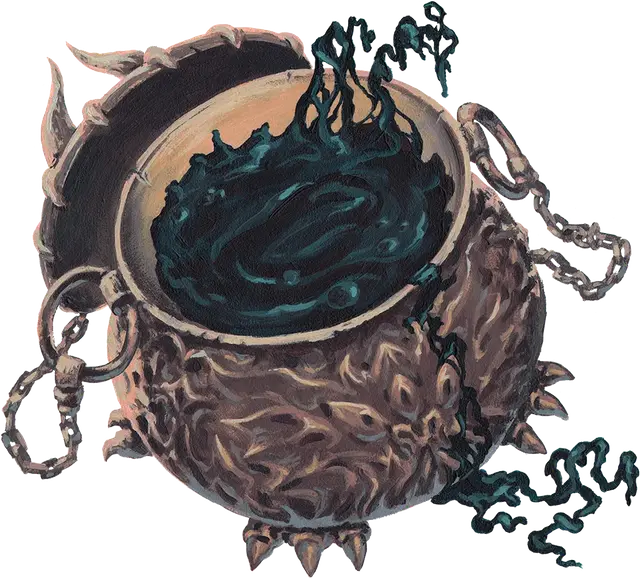

Шкура демона
Demon Skin
Доспех (любой тяжёлый), редкий (требуется настройка)

Рекомендованная стоимость 501-5 000 зм
Этот доспех похож на котел с пузырящимся чёрным ихором. Когда вы настраиваетесь на него, котел исчезает, а ихор прилипает к вашей коже. Доспех можно носить под одеждой, он не сковывает ваши движения, а также не мешает вашему телу. После надевания доспеха его будет невозможно снять, пока вы добровольно не захотите это сделать или не умрете. В таком случае котел вновь появится, а ихор перетечет в него.
Пока вы носите этот доспех, вы получаете сопротивление урону ядом. Также он не накладывает помеху на проверки Ловкости (Скрытность).